Getting Started with UR-Vault on Android
Browser Integration Support Matrix
| Feature |
Android |
| Browser Registration |
Manual |
| Password Autofill |
Generate in App, Paste in Extension |
2. Install browser extension
Click on the link for instructions to install the UR-Vault extension on the browser. The extension enables auto-fill of new and rotated passwords.
For installing browser extensions, please refer to: https://balajikadambi.github.io/UR-Vault/browser-support/.
Select Firefox for installation
2.1 Configure settings on UR-Vault App for browser integration
Open the UR-Vault extension App for Firefox.
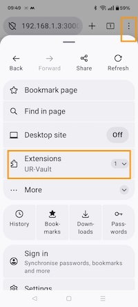
Copy the Browser ID on the Configuration tab.
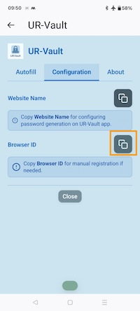
Go to Settings on UR-Vault App.
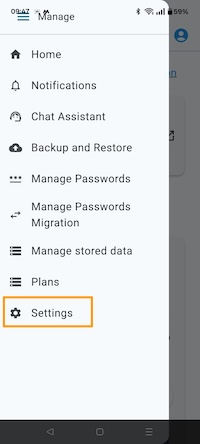
Paste the Browser ID for Firefox.

Save settings by clicking on Save button.
3. Password generation for a website
On the browser extension Configuration tab, copy website name.
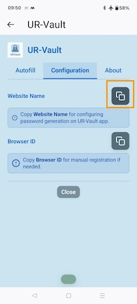
Go to Manage passwords on the UR-Vault App.
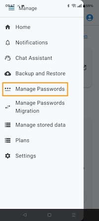
Select Generate option. Paste website name.
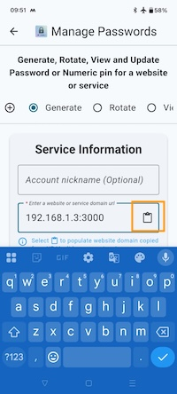
Enter account details.
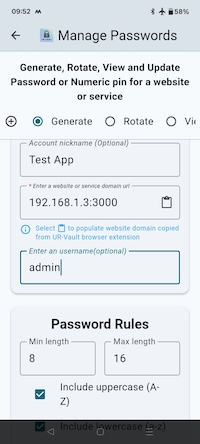
Enter password rules.
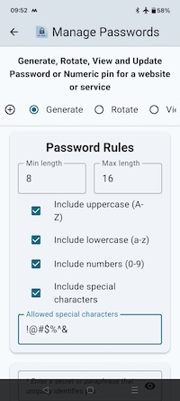
Enter secret.
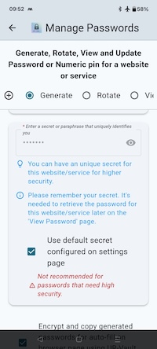
Click on Generate to generate password.
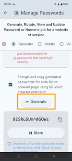
Paste passwords on the browser extension Autofill page.

The passwords are loaded and available on the webpage to be populated.
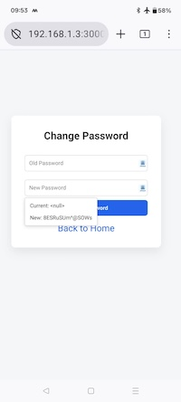
Once the password works on the website, store the password on the UR-Vault app.
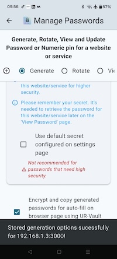
4. Autofill passwords for a website
Generate the password for the website or service from the stored configuration. Go to Manage passwords on the UR-Vault App and select View option.
Select the details for the website or service. Generate the password. The passwords are copied to clipboard.
Paste passwords on the browser extension Autofill page.
The passwords are loaded and available on the webpage to be populated.
5. Rotate password for a website
The procedure is the same as for macOS. Please refer this link to rotate a password configuration for a website and save on the UR-Vault App.
6. Migrate passwords from other providers
The procedure is the same as for macOS. Please refer this link to migrate passwords from other providers and save on the UR-Vault App.
7. Manage stored data
The procedure is the same as for macOS. Please refer this link to manage stored data on the UR-Vault App.
8. Backup and restore websites data
The procedure is the same as for macOS. Please refer this link to backup and restore websites data on the UR-Vault App.